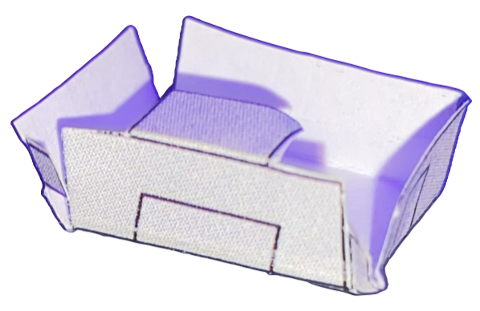

Domain Specific Language for Sheet Metal
Computational Design, DSLs, Fabrication
- What I built: An embedded Python DSL for designing folded sheet metal structures (e.g., enclosures).
- Why it matters: Automates the tedious translation from 3D design intent to 2D fabrication patterns.
- Proof: Automatically generates laser-ready SVGs from high-level Python code.
Problem / Goal
Designing complex folded sheet metal structures (like electronics enclosures or origami-inspired robots) manually in CAD is often tedious and prone to error, especially when calculating unfold patterns.
The goal was to create a Domain Specific Language (DSL) embedded in Python to automate this process, allowing users to define structures logically (as a hierarchy of tabs) rather than geometrically drafting every edge.
My Contribution
I built the core logic and interpreter for the DSL:
- Embedded DSL: Implemented as a Python library where tabs are objects and relationships are defined via function calls.
- Tree-Based Traversal: Designed the interpreter to traverse the component tree recursively to compute global coordinates from local relative transformations.
- Fabrication Export: Automatically built the unfolded 2D geometry and exported it as an SVG for laser cutting, ensuring physical connectivity.
Technical Approach
1. The Tab Logic (Embedded DSL)
The `Tab` class is the fundamental primitive. The `generate_child_tab` function handles the complexity of attaching a new geometric piece to a parent edge, managing spatial offsets and bend angles.
@dataclass
class Tab:
""" A structure that represents a tab and a bend with respect to the parent tab. """
parent: Optional["Tab"]
children: list["Tab"]
position: np.ndarray # Root position
bend_angle: Optional[float] # Angle for 3D folding
def generate_child_tab(parent, side, offset, width, length, angle=0.0, bend_angle=np.pi/2):
"""
Generate a child tab attached to a parent tab.
side: 0=top, 1=right, 2=bottom, 3=left
"""
tab = Tab(
parent=parent,
children=[],
width=0.0, # Computed from geometry
side=side,
offset=offset,
child_width=width,
child_length=length,
bend_angle=bend_angle
)
parent.children.append(tab)
return tab2. Usage Example: Defining a Structure
Users can define complex, nested geometries with just a few lines of code. This script defines a root base and attaches walls to create a box-like structure. The semantic clarity improves maintainability over raw coordinate lists.
# Define the base of the structure
root = generate_root_tab(width=50, length=50)
# Attach four walls to the base
north_wall = generate_child_tab(root, side=0, offset=0, width=50, length=30, bend_angle=np.radians(90))
east_wall = generate_child_tab(root, side=1, offset=0, width=50, length=30, bend_angle=np.radians(90))
south_wall = generate_child_tab(root, side=2, offset=0, width=50, length=30, bend_angle=np.radians(90))
west_wall = generate_child_tab(root, side=3, offset=0, width=50, length=30, bend_angle=np.radians(90))
# Export the flat pattern for laser cutting
draw_svg(root, "output_pattern.svg")Validation / Results
The system was validated by generating laser-cut patterns for physical prototypes. The folded structures perfectly matched the digital 3D visualization, confirming the accuracy of the unfolding algorithm.

Lessons + Next Steps
Key Insight: Recursion is a natural fit for physical assemblies that branch out from a core component. However, managing relative coordinate frames (local-to-global) requires careful matrix transformations.
Next Steps: Adding collision detection to prevent the user from designing physically impossible folds (self-intersection).